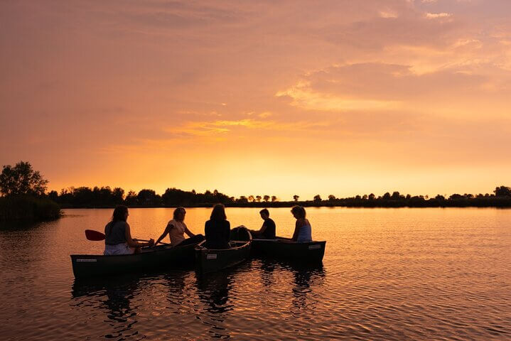

Bienvenido a EcoTravel, tu puerta de entrada a experiencias de viaje únicas y sostenibles
Explora destinos increíbles, conecta con la naturaleza y descubre culturas fascinantes mientras contribuyes a la conservación del medio ambiente. Desde santuarios de mariposas monarca hasta desiertos infinitos, te ofrecemos aventuras que inspiran y respetan el planeta. ¡Empieza tu viaje responsable hoy!
Viaja con nosotros
Conoce las Mariposas Monarcas
Vive una experiencia mágica en los santuarios de las mariposas monarca en México. Descubre cómo millones de estos increíbles insectos transforman los bosques en un espectáculo de color y vida cada invierno. ¡Un viaje único para conectar con la naturaleza!
¿Qué incluye?
Visita a los santuarios de las mariposas monarca
Experiencia de vuelo en globo
Excursión a la reserva natural
Alimentación y alojamiento
Guía especializado
$7,500 por persona
Experimenta Jalisto y su tequila
Sumérgete en el corazón de Jalisco, la cuna del tequila. Recorre campos de agave azul, visita destilerías tradicionales y descubre los paisajes vibrantes de esta región icónica de México. ¡Una experiencia llena de sabor, cultura y tradición!
¿Qué incluye?
Recorrido por campos de agave azul y visita a destilerías tradicionales
Degustación de diferentes variedades de tequila (blanco, reposado, añejo)
Visita a pueblos pintorescos como Tequila y Guadalajara
Actividades culturales: talleres de cocina tradicional y música local
Alimentación y alojamiento en haciendas típicas
Guía especializado en cultura y producción de tequila
$6,900 por persona
Las ballenas de baja california
Vive un encuentro inolvidable con las majestuosas ballenas grises en las aguas de Baja California. Navega por la Reserva de la Biosfera El Vizcaíno y observa de cerca a estos gigantes del océano en su hábitat natural. ¡Una experiencia única en la vida!
¿Qué incluye?
Avistamiento de ballenas grises en la Reserva de la Biosfera El Vizcaíno
Navegación en embarcaciones autorizadas con guías expertos
Actividades adicionales: kayak en la laguna y caminatas por la costa
Alimentación y alojamiento en eco-lodges locales
Guía especializado en vida marina y conservación
$8,200 por persona
Waterland en la fria Holanda
Descubre la encantadora región de Waterland, un paraíso acuático en los Países Bajos. Navega por sus canales, visita pintorescos pueblos y maravíllate con los molinos de viento y los paisajes típicos holandeses. ¡Una experiencia tranquila y auténtica en el corazón de Holanda!
¿Qué incluye?
Vuelo redonde desde Mexico
Navegación por los canales y lagos de Waterland
Visita a pueblos icónicos como Volendam, Edam y Monnickendam
Experiencia en una quesería tradicional con degustación de quesos holandeses
Recorrido por el Parque Nacional Waterland (caminata o bicicleta)
Alimentación y alojamiento en posadas locales
Guía especializado en historia y cultura holandesa
$35,500 por persona
Un Qatar Vacio

Adéntrate en el impresionante Rub' Al Khali, el desierto de arena más grande del mundo. Descubre dunas doradas, atardeceres mágicos y vive emocionantes actividades en el desierto. Una experiencia inolvidable, respetando siempre la naturaleza y sus normas.
¿Qué incluye?
Vuelo redonde desde Mexico
Exploración del desierto de Rub' Al Khali en vehículos 4x4
Experiencia de sandboarding en las dunas doradas
Noche en un campamento beduino con cena bajo las estrellas
Actividades culturales: música y danzas tradicionales
Alimentación y alojamiento en campamentos ecológicos
Guía especializado en ecoturismo y cultura beduina